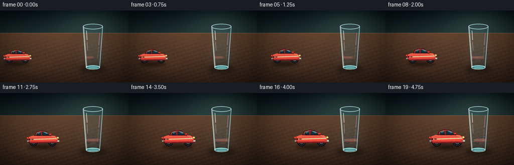
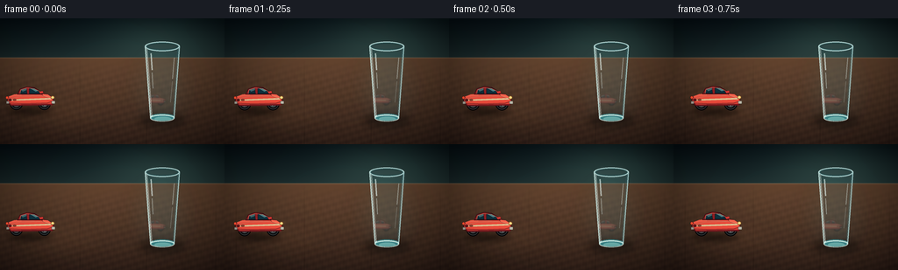

CODING AGENTS AS PIXEL WORLD MODELS
traex/DeepSeek-V4.1-Flash · phygen_063
点击播放 · 原生 RGB 像素
逐轮保存的候选
回放视频、检查图与代码变化。
每份候选均可单独播放。实际图片检查记录在下方工具轨迹中。
候选 01播放与检查图
点击播放 · 原生 RGB 像素


展开代码变化
--- 上一保存版本
+++ 本次保存版本
@@ -0,0 +1,509 @@
+from __future__ import annotations
+
+import math
+from pathlib import Path
+
+import numpy as np
+from PIL import Image, ImageChops, ImageDraw, ImageEnhance, ImageFilter, ImageOps
+
+import artifact_io
+
+
+W, H = 256, 144
+N, FPS = 20, 4.0
+S = 4
+CANVAS = (W * S, H * S)
+
+GLASS = {
+ "cx": 185.0,
+ "top": 32.0,
+ "bottom": 114.0,
+ "top_half": 20.0,
+ "bottom_half": 14.0,
+ "rim_half_h": 5.5,
+}
+
+
+def px(value: float) -> int:
+ return int(round(value * S))
+
+
+def points(values):
+ return [(px(x), px(y)) for x, y in values]
+
+
+def bbox(x0, y0, x1, y1):
+ return (px(x0), px(y0), px(x1), px(y1))
+
+
+def rgba(color):
+ if len(color) == 3:
+ return (*color, 255)
+ return color
+
+
+def polygon(draw: ImageDraw.ImageDraw, values, fill=None, outline=None, width=1):
+ draw.polygon(
+ points(values),
+ fill=None if fill is None else rgba(fill),
+ outline=None if outline is None else rgba(outline),
+ width=max(1, px(width)),
+ )
+
+
+def line(draw: ImageDraw.ImageDraw, values, fill, width=1):
+ draw.line(points(values), fill=rgba(fill), width=max(1, px(width)), joint="curve")
+
+
+def ellipse(draw: ImageDraw.ImageDraw, values, fill=None, outline=None, width=1):
+ draw.ellipse(
+ bbox(*values),
+ fill=None if fill is None else rgba(fill),
+ outline=None if outline is None else rgba(outline),
+ width=max(1, px(width)),
+ )
+
+
+def rounded_rect(draw: ImageDraw.ImageDraw, values, radius, fill=None, outline=None, width=1):
+ draw.rounded_rectangle(
+ bbox(*values),
+ radius=px(radius),
+ fill=None if fill is None else rgba(fill),
+ outline=None if outline is None else rgba(outline),
+ width=max(1, px(width)),
+ )
+
+
+def smoothstep(a: float, b: float, value: float) -> float:
+ if a == b:
+ return float(value >= b)
+ t = min(1.0, max(0.0, (value - a) / (b - a)))
+ return t * t * (3.0 - 2.0 * t)
+
+
+def make_background() -> Image.Image:
+ """Build the warm tabletop and dark teal studio wall once."""
+ yy, xx = np.mgrid[0 : H * S, 0 : W * S].astype(np.float32)
+ x = xx / S
+ y = yy / S
+ image = np.zeros((H * S, W * S, 3), dtype=np.float32)
+
+ horizon = 45.0
+ wall_t = np.clip(y / horizon, 0.0, 1.0)[..., None]
+ wall_top = np.array([13, 24, 29], dtype=np.float32)
+ wall_bottom = np.array([34, 50, 51], dtype=np.float32)
+ wall = wall_top * (1.0 - wall_t) + wall_bottom * wall_t
+
+ glow_dx = (x - 183.0) / 108.0
+ glow_dy = (y - 26.0) / 54.0
+ glow = np.exp(-(glow_dx * glow_dx + glow_dy * glow_dy) * 2.5)[..., None]
+ wall += glow * np.array([21.0, 30.0, 25.0], dtype=np.float32)
+
+ table_t = np.clip((y - horizon) / (H - horizon), 0.0, 1.0)[..., None]
+ table_far = np.array([103, 72, 51], dtype=np.float32)
+ table_near = np.array([57, 39, 31], dtype=np.float32)
+ table = table_far * (1.0 - table_t) + table_near * table_t
+
+ grain = (
+ 3.4 * np.sin(x * 0.24 + y * 0.82)
+ + 1.8 * np.sin(x * 0.71 - y * 0.31)
+ + 1.1 * np.sin(x * 1.83 + y * 0.15)
+ )
+ grain *= np.clip((y - horizon) / 28.0, 0.0, 1.0)
+ table += grain[..., None] * np.array([1.0, 0.68, 0.46], dtype=np.float32)
+
+ table_mask = (y >= horizon)[..., None]
+ image[:] = wall
+ image = image * (1.0 - table_mask) + table * table_mask
+
+ # A thin lit edge gives the tabletop a readable plane without a hard stripe.
+ edge = np.exp(-((y - horizon) / 0.65) ** 2)[..., None]
+ image += edge * np.array([35.0, 25.0, 17.0], dtype=np.float32)
+
+ # Perspective board seams and a few broad grain bands recede toward the wall.
+ seam_strength = np.clip((y - horizon) / 22.0, 0.0, 1.0)
+ for seam_x in (13.0, 91.0, 167.0, 246.0):
+ seam = np.exp(-((x - seam_x) / 0.42) ** 2) * seam_strength
+ image -= seam[..., None] * np.array([8.0, 6.0, 5.0], dtype=np.float32)
+
+ vignette_x = (x - W * 0.5) / (W * 0.56)
+ vignette_y = (y - H * 0.52) / (H * 0.70)
+ vignette = np.clip(1.0 - 0.30 * (vignette_x**2 + vignette_y**2), 0.62, 1.0)
+ image *= vignette[..., None]
+
+ base = Image.fromarray(np.clip(image, 0, 255).astype(np.uint8), "RGB").convert("RGBA")
+ draw = ImageDraw.Draw(base, "RGBA")
+
+ # Soft pools of light anchor the glass and the car's path.
+ glow_layer = Image.new("RGBA", CANVAS, (0, 0, 0, 0))
+ gd = ImageDraw.Draw(glow_layer, "RGBA")
+ ellipse(gd, (148, 35, 221, 124), fill=(87, 153, 154, 20))
+ ellipse(gd, (18, 88, 122, 128), fill=(218, 149, 84, 15))
+ glow_layer = glow_layer.filter(ImageFilter.GaussianBlur(px(12)))
+ base = Image.alpha_composite(base, glow_layer)
+ draw = ImageDraw.Draw(base, "RGBA")
+
+ # Glass contact shadow, softened before the dynamic car is added.
+ shadow = Image.new("RGBA", CANVAS, (0, 0, 0, 0))
+ sd = ImageDraw.Draw(shadow, "RGBA")
+ ellipse(sd, (159, 110, 211, 123), fill=(18, 13, 11, 130))
+ ellipse(sd, (171, 112, 200, 120), fill=(8, 8, 8, 105))
+ shadow = shadow.filter(ImageFilter.GaussianBlur(px(4.2)))
+ base = Image.alpha_composite(base, shadow)
+
+ # Faint background echo of the glass base.
+ draw = ImageDraw.Draw(base, "RGBA")
+ ellipse(draw, (171, 109, 199, 117), fill=(81, 143, 142, 24))
+
+ return base
+
+
+def make_glass_mask() -> Image.Image:
+ mask = Image.new("L", CANVAS, 0)
+ draw = ImageDraw.Draw(mask)
+ top, bottom = GLASS["top"], GLASS["bottom"]
+ left_top = GLASS["cx"] - GLASS["top_half"]
+ right_top = GLASS["cx"] + GLASS["top_half"]
+ left_bottom = GLASS["cx"] - GLASS["bottom_half"]
+ right_bottom = GLASS["cx"] + GLASS["bottom_half"]
+ draw.polygon(
+ points([(left_top, top), (right_top, top), (right_bottom, bottom), (left_bottom, bottom)]),
+ fill=255,
+ )
+ draw.ellipse(
+ bbox(left_top, top - GLASS["rim_half_h"], right_top, top + GLASS["rim_half_h"]),
+ fill=255,
+ )
+ draw.ellipse(
+ bbox(left_bottom, bottom - 4.0, right_bottom, bottom + 4.0),
+ fill=255,
+ )
+ return mask.filter(ImageFilter.GaussianBlur(px(0.25)))
+
+
+def draw_glass_tint(image: Image.Image, mask: Image.Image) -> Image.Image:
+ tint = Image.new("RGBA", CANVAS, (0, 0, 0, 0))
+ draw = ImageDraw.Draw(tint, "RGBA")
+ top, bottom = GLASS["top"], GLASS["bottom"]
+ lx0, rx0 = GLASS["cx"] - GLASS["top_half"], GLASS["cx"] + GLASS["top_half"]
+ lx1, rx1 = GLASS["cx"] - GLASS["bottom_half"], GLASS["cx"] + GLASS["bottom_half"]
+ polygon(
+ draw,
+ [(lx0, top), (rx0, top), (rx1, bottom), (lx1, bottom)],
+ fill=(126, 198, 203, 23),
+ )
+ ellipse(draw, (lx1 + 1.0, bottom - 5.0, rx1 - 1.0, bottom + 3.5), fill=(44, 119, 126, 25))
+ ellipse(draw, (lx0 + 1.0, top - 3.5, rx0 - 1.0, top + 3.5), fill=(168, 225, 226, 18))
+ tint.putalpha(ImageChops.multiply(tint.getchannel("A"), mask))
+ return Image.alpha_composite(image, tint)
+
+
+def draw_glass_front(image: Image.Image) -> Image.Image:
+ overlay = Image.new("RGBA", CANVAS, (0, 0, 0, 0))
+ draw = ImageDraw.Draw(overlay, "RGBA")
+ top, bottom = GLASS["top"], GLASS["bottom"]
+ cx = GLASS["cx"]
+ th, bh = GLASS["top_half"], GLASS["bottom_half"]
+ rh = GLASS["rim_half_h"]
+
+ # Side walls, rim, and foot are layered like real glass: a cool core with a
+ # warm secondary edge from the tabletop.
+ ellipse(draw, (cx - th, top - rh, cx + th, top + rh), outline=(210, 244, 241, 218), width=1.6)
+ ellipse(draw, (cx - th + 1.5, top - rh + 1.0, cx + th - 1.5, top + rh - 1.0), outline=(84, 149, 153, 122), width=0.8)
+ ellipse(draw, (cx - th + 3.0, top - rh + 2.2, cx + th - 3.0, top + rh - 2.2), outline=(22, 61, 65, 92), width=0.7)
+ line(draw, [(cx - th + 0.5, top + 0.5), (cx - bh + 0.5, bottom - 1.0)], (214, 245, 239, 195), 1.4)
+ line(draw, [(cx + th - 0.5, top + 0.5), (cx + bh - 0.5, bottom - 1.0)], (184, 231, 231, 190), 1.3)
+ line(draw, [(cx - th + 2.2, top + 2.0), (cx - bh + 2.0, bottom - 2.0)], (244, 255, 248, 115), 0.9)
+ line(draw, [(cx + th - 2.2, top + 2.5), (cx + bh - 1.8, bottom - 2.5)], (70, 137, 145, 90), 0.8)
+ ellipse(draw, (cx - bh, bottom - 4.0, cx + bh, bottom + 4.0), outline=(215, 241, 232, 185), width=1.2)
+ ellipse(draw, (cx - bh + 1.2, bottom - 2.8, cx + bh - 1.2, bottom + 2.8), outline=(89, 155, 158, 100), width=0.8)
+
+ # Tall, broken highlights read as cylindrical curvature.
+ line(draw, [(cx - 13.0, top + 8.0), (cx - 11.8, top + 27.0)], (238, 255, 250, 155), 1.4)
+ line(draw, [(cx - 11.8, top + 30.0), (cx - 10.8, top + 48.0)], (238, 255, 250, 92), 0.9)
+ line(draw, [(cx + 13.5, top + 13.0), (cx + 11.5, top + 37.0)], (233, 250, 244, 98), 1.0)
+ line(draw, [(cx + 11.5, top + 40.0), (cx + 9.2, bottom - 18.0)], (230, 247, 239, 55), 0.8)
+
+ # A small floor caustic ties the transparent object to the wood.
+ ellipse(draw, (cx - 9.0, bottom - 1.5, cx + 10.0, bottom + 3.2), fill=(158, 220, 211, 34))
+ return Image.alpha_composite(image, overlay)
+
+
+def draw_wheel(draw: ImageDraw.ImageDraw, cx: float, cy: float, radius: float, angle: float):
+ ellipse(draw, (cx - radius, cy - radius, cx + radius, cy + radius), fill=(17, 19, 21, 255), outline=(5, 6, 8, 255), width=1.2)
+ ellipse(draw, (cx - radius + 1.2, cy - radius + 1.2, cx + radius - 1.2, cy + radius - 1.2), outline=(58, 61, 63, 255), width=0.9)
+ rim = radius * 0.53
+ ellipse(draw, (cx - rim, cy - rim, cx + rim, cy + rim), fill=(126, 131, 132, 255), outline=(56, 59, 60, 255), width=0.7)
+ ellipse(draw, (cx - rim + 1.0, cy - rim + 1.0, cx + rim - 1.0, cy + rim - 1.0), fill=(59, 65, 68, 255))
+ for i in range(5):
+ a = angle + i * math.tau / 5.0
+ inner = 1.2
+ outer = rim - 1.7
+ line(
+ draw,
+ [
+ (cx + math.cos(a) * inner, cy + math.sin(a) * inner),
+ (cx + math.cos(a) * outer, cy + math.sin(a) * outer),
+ ],
+ (188, 192, 190, 230),
+ 0.9,
+ )
+ ellipse(draw, (cx - 1.6, cy - 1.6, cx + 1.6, cy + 1.6), fill=(205, 209, 205, 255))
+
+
+def make_car_sprite(wheel_angle: float, reflection: bool = False) -> Image.Image:
+ sprite_w, sprite_h = 76, 48
+ sprite = Image.new("RGBA", (sprite_w * S, sprite_h * S), (0, 0, 0, 0))
+ draw = ImageDraw.Draw(sprite, "RGBA")
+
+ # Wheels sit behind the body. Chunky tires and bright hubs make the toy
+ # proportions readable at this small output size.
+ draw_wheel(draw, 19.0, 31.0, 8.8, wheel_angle)
+ draw_wheel(draw, 58.0, 31.0, 8.8, wheel_angle + 0.12)
+
+ # Lower chassis and a soft warm reflected edge.
+ polygon(
+ draw,
+ [(7, 27), (8, 22), (14, 19), (23, 17), (56, 17), (64, 19), (70, 23), (72, 29), (69, 33), (12, 34), (7, 31)],
+ fill=(120, 32, 36, 255),
+ outline=(56, 17, 22, 255),
+ width=1.25,
+ )
+ polygon(
+ draw,
+ [(8, 28), (10, 24), (16, 21), (23, 19), (56, 19), (64, 21), (69, 24), (70, 29), (67, 31), (13, 32), (8, 30)],
+ fill=(204, 58, 53, 255),
+ )
+
+ # Main red body, with a cool rim light and a warm underside.
+ polygon(
+ draw,
+ [(6, 27), (7, 22), (13, 19), (23, 17), (55, 16), (63, 18), (69, 22), (72, 28), (69, 32), (12, 33), (7, 30)],
+ fill=(220, 66, 57, 255),
+ outline=(70, 20, 25, 255),
+ width=1.0,
+ )
+ polygon(
+ draw,
+ [(8, 28), (10, 24), (16, 21), (24, 19), (55, 18), (63, 20), (68, 23), (69, 27), (66, 29), (13, 30)],
+ fill=(236, 78, 62, 255),
+ )
+ polygon(
+ draw,
+ [(8, 29), (12, 32), (68, 31), (71, 28), (69, 33), (12, 34)],
+ fill=(117, 28, 34, 255),
+ )
+
+ # Hood and rear deck catch the key light.
+ polygon(
+ draw,
+ [(53, 17), (63, 18), (69, 22), (66, 24), (57, 21)],
+ fill=(249, 104, 81, 255),
+ outline=(181, 44, 42, 155),
+ width=0.55,
+ )
+ polygon(
+ draw,
+ [(8, 21), (16, 18), (26, 17), (26, 20), (16, 21), (10, 23)],
+ fill=(246, 91, 72, 255),
+ )
+ line(draw, [(9, 24), (24, 21), (55, 20), (67, 23)], (255, 151, 121, 190), 0.85)
+ line(draw, [(10, 30), (31, 31), (62, 30), (68, 28)], (104, 23, 31, 180), 0.75)
+
+ # Cabin and dark blue windows.
+ polygon(
+ draw,
+ [(20, 18), (24, 10), (34, 7), (44, 8), (52, 13), (56, 18)],
+ fill=(145, 35, 39, 255),
+ outline=(68, 18, 23, 255),
+ width=1.0,
+ )
+ polygon(
+ draw,
+ [(23, 17), (26, 11), (33, 9), (34, 17)],
+ fill=(21, 50, 61, 255),
+ outline=(7, 22, 28, 255),
+ width=0.6,
+ )
+ polygon(
+ draw,
+ [(37, 9), (44, 9), (50, 13), (53, 17), (37, 17)],
+ fill=(20, 53, 65, 255),
+ outline=(7, 22, 28, 255),
+ width=0.6,
+ )
+ polygon(
+ draw,
+ [(25, 11), (33, 9), (33, 12), (28, 14)],
+ fill=(73, 122, 129, 205),
+ )
+ polygon(
+ draw,
+ [(39, 10), (44, 10), (49, 13), (46, 14)],
+ fill=(86, 142, 147, 220),
+ )
+ line(draw, [(24, 17), (25, 12), (33, 9), (44, 10), (52, 14)], (254, 116, 94, 210), 0.85)
+
+ # Cream side stripe, mirror, lights, bumpers, and toy-like glossy details.
+ polygon(
+ draw,
+ [(8, 25), (66, 23), (68, 25), (10, 27)],
+ fill=(244, 220, 166, 225),
+ )
+ polygon(draw, [(50, 14), (56, 13), (57, 16), (52, 17)], fill=(218, 61, 55, 255), outline=(78, 21, 24, 220), width=0.5)
+ ellipse(draw, (67.0, 20.0, 72.0, 24.5), fill=(255, 223, 139, 255), outline=(145, 95, 43, 255), width=0.65)
+ ellipse(draw, (4.2, 20.6, 8.1, 24.4), fill=(255, 84, 51, 255), outline=(105, 25, 27, 255), width=0.55)
+ rounded_rect(draw, (68.0, 27.0, 73.0, 31.0), 1.0, fill=(189, 187, 172, 255), outline=(82, 79, 70, 255), width=0.5)
+ rounded_rect(draw, (5.0, 27.5, 9.0, 31.0), 0.8, fill=(157, 155, 145, 255), outline=(73, 70, 64, 255), width=0.45)
+ ellipse(draw, (8.0, 24.0, 12.5, 27.5), fill=(106, 26, 31, 255), outline=(65, 17, 22, 200), width=0.45)
+ line(draw, [(13, 20), (25, 19), (44, 19), (55, 20)], (255, 168, 136, 185), 0.55)
+ ellipse(draw, (14, 24, 19, 27), fill=(255, 115, 89, 90))
+
+ if reflection:
+ array = np.asarray(sprite).astype(np.float32)
+ rgb = array[..., :3]
+ # Cool the reflection slightly while preserving the red toy silhouette.
+ rgb = rgb * 0.77 + np.array([32.0, 61.0, 66.0], dtype=np.float32) * 0.23
+ array[..., :3] = np.clip(rgb, 0, 255)
+ sprite = Image.fromarray(array.astype(np.uint8), "RGBA")
+ sprite = ImageEnhance.Color(sprite).enhance(0.78)
+
+ return sprite
+
+
+def place_sprite(
+ image: Image.Image,
+ sprite: Image.Image,
+ center_x: float,
+ ground_y: float,
+ scale: float,
+ opacity: float = 1.0,
+ mask: Image.Image | None = None,
+ blur: float = 0.0,
+) -> Image.Image:
+ target_w = max(1, int(round(76 * scale * S)))
+ target_h = max(1, int(round(48 * scale * S)))
+ placed = sprite.resize((target_w, target_h), Image.Resampling.LANCZOS)
+ if blur > 0:
+ placed = placed.filter(ImageFilter.GaussianBlur(px(blur)))
+ if opacity < 1.0:
+ alpha = placed.getchannel("A").point(lambda value: int(value * opacity))
+ placed.putalpha(alpha)
+ layer = Image.new("RGBA", CANVAS, (0, 0, 0, 0))
+ left = int(round(center_x * S - target_w / 2.0))
+ top = int(round(ground_y * S - 40.0 * scale * S))
+ layer.alpha_composite(placed, (left, top))
+ if mask is not None:
+ layer.putalpha(ImageChops.multiply(layer.getchannel("A"), mask))
+ return Image.alpha_composite(image, layer)
+
+
+def draw_car_shadow(image: Image.Image, center_x: float, ground_y: float, scale: float) -> Image.Image:
+ layer = Image.new("RGBA", CANVAS, (0, 0, 0, 0))
+ draw = ImageDraw.Draw(layer, "RGBA")
+ half_w = 31.0 * scale
+ half_h = 4.6 * scale
+ ellipse(
+ draw,
+ (center_x - half_w, ground_y - half_h, center_x + half_w, ground_y + half_h),
+ fill=(22, 13, 9, 130),
+ )
+ ellipse(
+ draw,
+ (center_x - half_w * 0.55, ground_y - 1.7, center_x + half_w * 0.55, ground_y + 3.2),
+ fill=(8, 7, 6, 150),
+ )
+ layer = layer.filter(ImageFilter.GaussianBlur(px(3.1)))
+ return Image.alpha_composite(image, layer)
+
+
+def draw_reflection(
+ image: Image.Image,
+ sprite: Image.Image,
+ mask: Image.Image,
+ progress: float,
+) -> Image.Image:
+ mirrored = ImageOps.mirror(sprite)
+ scale = 0.39 + 0.14 * progress
+ center_x = 176.0 + 17.0 * progress
+ ground_y = 99.5 + 3.0 * progress
+ opacity = 0.38 + 0.16 * progress
+ reflected = place_sprite(
+ image,
+ mirrored,
+ center_x,
+ ground_y,
+ scale,
+ opacity=opacity,
+ mask=mask,
+ blur=0.55,
+ )
+
+ # A faint secondary streak suggests the cylindrical glass spreading the
+ # reflected highlights vertically.
+ streak = Image.new("RGBA", CANVAS, (0, 0, 0, 0))
+ sd = ImageDraw.Draw(streak, "RGBA")
+ ellipse(sd, (center_x - 10.0, ground_y - 16.0, center_x + 10.0, ground_y + 2.0), fill=(226, 113, 86, 22))
+ streak.putalpha(ImageChops.multiply(streak.getchannel("A"), mask))
+ streak = streak.filter(ImageFilter.GaussianBlur(px(3.8)))
+ return Image.alpha_composite(reflected, streak)
+
+
+def color_finish(image: Image.Image) -> Image.Image:
+ small = image.convert("RGB").resize((W, H), Image.Resampling.LANCZOS)
+ array = np.asarray(small).astype(np.float32)
+
+ # Gentle final contrast and a restrained vignette keep the toy and glass
+ # separated from the tabletop.
+ array = (array - 128.0) * 1.035 + 128.0
+ yy, xx = np.mgrid[0:H, 0:W].astype(np.float32)
+ vx = (xx - W * 0.5) / (W * 0.61)
+ vy = (yy - H * 0.51) / (H * 0.76)
+ vignette = np.clip(1.0 - 0.13 * (vx * vx + vy * vy), 0.80, 1.0)
+ array *= vignette[..., None]
+ return Image.fromarray(np.clip(array, 0, 255).astype(np.uint8), "RGB")
+
+
+def render() -> np.ndarray:
+ background = make_background()
+ glass_mask = make_glass_mask()
+ frames = []
+
+ for index in range(N):
+ progress = index / (N - 1)
+ wheel_angle = progress * math.tau * 1.55
+ car_center_x = 34.0 + 88.0 * progress
+ car_ground_y = 105.0 + 2.0 * progress + 0.24 * math.sin(progress * math.tau * 2.0)
+ car_scale = 0.82 + 0.23 * progress
+
+ car_sprite = make_car_sprite(wheel_angle)
+ reflection_sprite = make_car_sprite(wheel_angle + 0.08, reflection=True)
+
+ frame = background.copy()
+ frame = draw_reflection(frame, reflection_sprite, glass_mask, progress)
+ frame = draw_glass_tint(frame, glass_mask)
+ frame = draw_glass_front(frame)
+ frame = draw_car_shadow(frame, car_center_x, car_ground_y + 1.2, car_scale)
+ frame = place_sprite(
+ frame,
+ car_sprite,
+ car_center_x,
+ car_ground_y,
+ car_scale,
+ opacity=1.0,
+ )
+ frame = color_finish(frame)
+ frames.append(np.asarray(frame, dtype=np.uint8))
+
+ return np.stack(frames, axis=0)
+
+
+def main() -> None:
+ frames = render()
+ case_dir = Path(__file__).resolve().parent
+ artifact_io.save(frames, case_dir)
+ print(f"wrote {frames.shape[0]} frames to {case_dir}")
+
+
+if __name__ == "__main__":
+ main()
候选 02播放与检查图
点击播放 · 原生 RGB 像素

展开代码变化
--- 上一保存版本
+++ 本次保存版本
@@ -131,7 +131,7 @@
vignette = np.clip(1.0 - 0.30 * (vignette_x**2 + vignette_y**2), 0.62, 1.0)
image *= vignette[..., None]
- base = Image.fromarray(np.clip(image, 0, 255).astype(np.uint8), "RGB").convert("RGBA")
+ base = Image.fromarray(np.clip(image, 0, 255).astype(np.uint8)).convert("RGBA")
draw = ImageDraw.Draw(base, "RGBA")
# Soft pools of light anchor the glass and the car's path.
@@ -365,7 +365,7 @@
# Cool the reflection slightly while preserving the red toy silhouette.
rgb = rgb * 0.77 + np.array([32.0, 61.0, 66.0], dtype=np.float32) * 0.23
array[..., :3] = np.clip(rgb, 0, 255)
- sprite = Image.fromarray(array.astype(np.uint8), "RGBA")
+ sprite = Image.fromarray(array.astype(np.uint8))
sprite = ImageEnhance.Color(sprite).enhance(0.78)
return sprite
@@ -461,7 +461,7 @@
vy = (yy - H * 0.51) / (H * 0.76)
vignette = np.clip(1.0 - 0.13 * (vx * vx + vy * vy), 0.80, 1.0)
array *= vignette[..., None]
- return Image.fromarray(np.clip(array, 0, 255).astype(np.uint8), "RGB")
+ return Image.fromarray(np.clip(array, 0, 255).astype(np.uint8))
def render() -> np.ndarray:
可观测工具轨迹
实际执行的命令与返回图片。
命令 1exit 0
/bin/bash -c "pwd && rg --files -g 'prompt.txt' -g 'GENERATION_RULES.md' -g 'task_spec.json' -g '"'!node_modules'"' -g '"'!*.pyc'"'"
命令 2exit 0
/bin/bash -c 'ls -la'
命令 3exit 0
/bin/bash -c 'cat GENERATION_RULES.md'
命令 4exit 0
/bin/bash -c 'cat prompt.txt'
命令 5exit 0
/bin/bash -c 'cat task_spec.json'
命令 6exit 0
/bin/bash -c "sed -n '1,240p' artifact_io.py"
命令 7exit 0
/bin/bash -c "sed -n '1,220p' player_template.html"
命令 8exit 0
/bin/bash -c 'python generate.py'
命令 9exit 0
/bin/bash -c 'command -v chafa || command -v viu || command -v jp2 || command -v img2txt || true'
命令 10exit 0
/bin/bash -c "python - <<'PY'
from PIL import Image
import numpy as np
from pathlib import Path
p=Path('.')
frames=[]
for f in sorted((p/'frames').glob('*.png')):
im=np.asarray(Image.open(f).convert('RGB'))
frames.append(im)
print(f.name, im.shape, 'mean', im.mean(axis=(0,1)).round(1), 'minmax', im.min(), im.max())
frames=np.stack(frames)
print('temporal mean abs delta', np.abs(frames[1:].astype(int)-frames[:-1]).mean())
print('changed pixels per transition', [(np.any(frames[i]"'!=frames[i-1],axis=2).sum()) for i in range(1,len(frames))])
PY'命令 11exit 0
/bin/bash -c "python - <<'PY'
from PIL import Image
import numpy as np
for name in ['inspection.png','transition_check.png','frames/00.png','frames/19.png']:
im=Image.open(name)
print(name, im.size)
im.resize((im.width*2,im.height*2),Image.Resampling.NEAREST).save('.tmp/'+name.replace('/','_'))
PY"命令 12exit 0
/bin/bash -c "python - <<'PY'
from PIL import Image
import numpy as np
for fn in ['frames/00.png','frames/09.png','frames/19.png']:
a=np.asarray(Image.open(fn).convert('RGB')).astype(float)
# sample to 64x36 by averaging
h,w=a.shape[:2]; ys=np.linspace(0,h,37).astype(int); xs=np.linspace(0,w,65).astype(int)
out=[]
for y0,y1 in zip(ys[:-1],ys[1:]):
row=''
for x0,x1 in zip(xs[:-1],xs[1:]):
r,g,b=a[y0:y1,x0:x1].mean((0,1)); lum=(r+g+b)/3
if r>g*1.45 and r>b*1.35 and r>75: c='R'
elif g>r*1.15 and b>r*1.15 and lum>55: c='C'
elif lum>190: c='@'
elif lum>140: c='O'
elif lum>100: c='o'
elif lum>65: c='+'
elif lum>40: c='-'
elif lum>24: c='.'
else: c=' '
row+=c
out.append(row.rstrip())
print('\\n'+fn+'\\n'+'\\n'.join(out))
PY"命令 13exit 1
/bin/bash -c "ls -lh generate.py pixels.npz index.html inspection.png transition_check.png frames/00.png frames/19.png && python - <<'PY'
from pathlib import Path
import numpy as np, json
z=np.load('pixels.npz')['pixels']
print('pixels',z.shape,z.dtype,'unique frames',len(np.unique(z,axis=(1,2))))
print('html bytes',Path('index.html').stat().st_size)
print('frame files',len(list(Path('frames').glob('*.png'))))
PY"命令 14exit 0
/bin/bash -c 'python generate.py'
命令 15exit 0
/bin/bash -c "python - <<'PY'
from pathlib import Path
import json, numpy as np
from PIL import Image
spec=json.loads(Path('task_spec.json').read_text())
z=np.load('pixels.npz')['pixels']
assert z.shape == (spec['height'],spec['width'],spec['frames']), z.shape
assert z.dtype == np.uint32
imgs=[np.asarray(Image.open(f'frames/{i:02d}.png').convert('RGB')) for i in range(spec['frames'])]
assert all(x.shape==(spec['height'],spec['width'],3) and x.dtype==np.uint8 for x in imgs)
packed=(imgs[0][...,0].astype(np.uint32)<<16)|(imgs[0][...,1].astype(np.uint32)<<8)|imgs[0][...,2]
assert np.array_equal(z[...,0],packed)
assert len({x.tobytes() for x in imgs})==spec['frames']
assert Path('index.html').stat().st_size>0
print('OK', spec['frames'], 'frames', spec['width'], 'x', spec['height'], '@', spec['fps'], 'fps')
print('RGB range', min(x.min() for x in imgs), max(x.max() for x in imgs))
print('temporal mean abs delta', np.abs(np.stack(imgs)[1:].astype(int)-np.stack(imgs)[:-1]).mean().round(3))
print('artifacts', ', '.join(p.name for p in [Path('pixels.npz'),Path('index.html'),Path('inspection.png'),Path('transition_check.png')]))
PY"命令 16exit 0
/bin/bash -c "git status --short 2>/dev/null || true; ls -la | sed -n '1,80p'"
保存候选 2 份；完成命令 16 次；可验证图片返回 0 张。原始 API 响应与完整日志保留在本地。